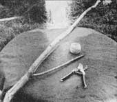
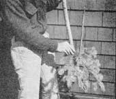
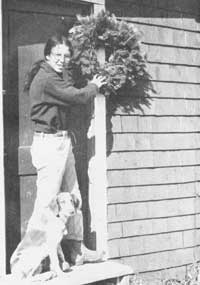
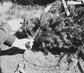

Make Wreaths For Winter Dollars
Use cuttings from evergreen trees to make wreaths for your family, friends and to sell for holiday cash.
By Gillian G. McDaniel
November/December 1975
Up here in Maine, winter sets in early and we've all had a busy time getting ready for it. Everywhere wood has been cut and stacked, hay stored, and vegetables and jams canned in anticipation of our long cold days to come. Now, along about the beginning of November, we start to spend more time indoors beside the old wood stove . . . and wouldn't it be nice if we could turn those warm hours into cash for the coming holidays? Well, we can . . . and if your area is blessed with fir trees, you can too!
There's a huge seasonal market in this country for holiday wreaths, and it takes only a little effort to cash in on that demand. What better occupation than to sit by a warm fire and breathe the fragrance of balsam fir, while you shape the trees' boughs into beautiful ornaments which will hang in windows and doorways far and wide come December?
TREES
The first ingredient in your new occupation is access to suitable trees. Here in the Northeast, balsam fir-the ideal material-is quite common and can be recognized by its smooth, even cones and by the bluish-white line on the underside of each needle. Other parts of the country boast different species of fir: white, red, silver, grand, and Douglas. I don't know much about these, except that they're cut as Christmas trees and so most likely could be used for wreathmaking too. Your local forester or nursery should be able to give you all the facts you need about the resources of your area's woods.
TIPPIN'
Once you know that firs of one kind or another thrive in your parts, your next step is to go on a "tipping" expedition to gather boughs. This is just as much fun as "making" and gives the whole family a chance to get involved in the project, even if they're not much interested in the actual construction process.
Bough collecting calls for a good pair of garden snippers, a ball of string, and a whole batch of carrying sticks. (I use alder or maple branches, about 6 feet long and an inch in diameter, cut in a sort of "Y" shape.) Then it's off to the woods to find a good stand of trees . . . and when you've done so, you simply snip off the ends of branches-"tips"-in lengths of about 15 to 18 inches and hook them over your stick, beginning in the crook of the "Y". Keep stacking on the greenery until the holder is full (but not too heavy to carry). Then tie the string tightly from one end of the "Y" to the other, and you have a neat two-handled carrier full of fir tips. The loaded sticks are easily toted out of the woods, a pair at a time, between two people.
A couple of hints: Don't cut the tips too soon before you need them, or the needles will dry up and fall off after the wreath is made. And, more important, please don't strip the fir grove bare! Unless you're going to be clearing the land where you gather materials, be selective and kind to the trees. Think of the process as pruning . . . because that's what it is. A well-trimmed evergreen will actually grow fuller and thicker and will be ready for more tipping in years to come.
ENTER THE MIDDLEMAN?
Next, you'll need some additional materials . . . but before you go out and buy them, you might want to look into an arrangement which can save you that trouble and a good deal more: Around here, at least, it's possible to make wreaths for local people who sell them to big-time nurseries.
Last year I worked for such a woman in my town. She furnished all the findings I needed, bought the wreaths as fast as I could make them, and sold them to nurseries in Washington, D.C., and in the Southern States. In my area (Machias), where so many people "make", it's simpler to operate this way . . . sell to a middleman and let that person worry about shipping and buyers. If not many folks in your parts are turning out wreaths, though, you might increase your profits by marketing your own creations: at a roadside stand, to nurseries, or through advertising.
One other alternative I should mention is to stop at the tipping stage and sell greenery to middlemen, who usually "make" themselves and always need materials. If you don't have a good place to work, or just don't dig making wreaths, you can still earn some dollars this way. Last year's price for bough ends was about 7 cents to 10 cents a pound.
HOW TO MAKE A WREATH
Let's assume, though, that you're going to do the "making" yourself. Apart from tips (I found I could produce about three 20-inch wreaths from the contents of one stick), you'll need your snippers again, plus lots of spools of thin wire-22 to 24-gauge and the heavy wire rings to which the boughs are attached. The last two items can be purchased from a hardware store, if you're not working for a middleman who supplies them.
All set? Then proceed as follows:
[1] Lay a wire ring down on a flat surface and attach one end of the thin wire to this base. The strand won't be cut until the wreath is completed.
[2] Take a tip and break off the top 6 to 8 inches. Fashion this and the other "leftover" pieces into a fan, with all the fat ends together.
[3] Place the fan-right side up-on the wire ring, hold the ends of the twigs together tightly, and wrap the thin wire a few times around both frame and greenery.
[4] Make another fan just like the first.
[5] Flip the ring over and place the second fan, also right side up, about 2 inches along the frame from the first (so that the two bunches are back to back). Fasten it with two or three tight turns of thin wire.
[6] Continue this process-making fans and attaching them to alternate sides of the ring, always right side up-all the way around the circle. Keep the wire wrapped tightly at all times, and try to make the bundles the same size and thickness throughout.
[7] Complete the circle by tucking the last two fans under the first, with the branches held up. Make these final bunches a bit shorter than normal, so they'll fit nicely.
[8] Wrap the last fans securely with thin wire, tie off the strand out of sight under the greenery, and let the branches fall back to cover the knot.
There you have it . . . your first wreath! You should be looking at an unbroken succession of fans on both sides of the frame, with no wire showing. If the overall effect is too shaggy, you can use the snippers to clean up the middle hole and trim off whatever pieces of branch you think are sticking out in the wrong places. The first couple of tries may seem awkward, but once you get into the technique it will become much easier and you'll be able to work while carrying on a lively conversation with your fellow "maker" (if you have one).
For further information, you might want to check with your cooperative extension service to find out whether a copy of USDA Bulletin No. 501, The Christmas Wreath Maker's Manual, is on file. This publication is out of print and is no longer available from Washington.
DOLLARS
Wreaths are made in diameters ranging from 8 to 24 inches, and the price varies accordingly. I think it's easier to learn on a larger size . . . but once you know how, you can make more of the smaller ornaments in less time.
Last year I received $1.15 for each 20-inch wreath I completed, and found that I could turn out two or three in an hour. Well, an hourly $2.30 to $3.45 ain't too bad, huh? And that's a beginner's rate. I know of a woman who made about $1,500 last year, in six weeks of whipping up 10-inchers.
This season, with a little experience behind me, I hope to do pretty well. If my husband gets in on the project too, we may not even have to work for the rest of the winter . . . and we'll have plenty of time for reading, cooking, skiing, and all the cold-weather pastimes which make country living so enjoyable.
How about you? If you get organized right now, you may be able to gather enough "green energy" over the next few weeks to get you through the winter months. Good luck, and happy "making"!
|
 Tipping materials: string,clippers, and carrying stick. |
Careful tipping stimulates the trees to vigorous growth. |
 Balsam tips are strung on the stick for easy transport |
|
 Each tip is cut into pieces, which are grouped as a fan. |
 The first bunch of twigs is wired to the wreath's base. |
The ring is then reversed, a second fan is attached |
|
The wreath grows as greens are wired to alternate sides. |
The foliage is raised and a last bunch tucked beneath. |
The wire is firmly tied off, and the wreath is complete. |
 The wreath grows as greens are wired to alternate sides. |
 The foliage is raised and a last bunch tucked beneath |
The wire is firmly tied off, and the wreath is complete |
 |
|
|